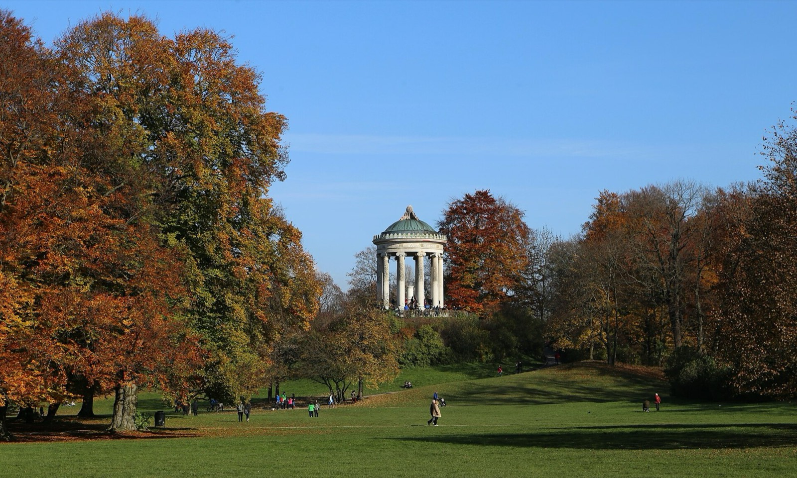

Route zwischen allem, was gerade vorne liegt. Kurze Wege zu Fuß, längere mit Öffis (eure Gruppen-Tageskarte gilt). Tippen öffnet Google Maps.
Preise sind grobe Schätzungen pro Person. Öffnungszeiten vorher kurz checken; Escape Room, Karaoke, Bouldern und Restaurants am Samstag reservieren.
Alle Fotos von Wikimedia Commons (freie Lizenzen, Symbolbilder, nicht die genannten Läden selbst):